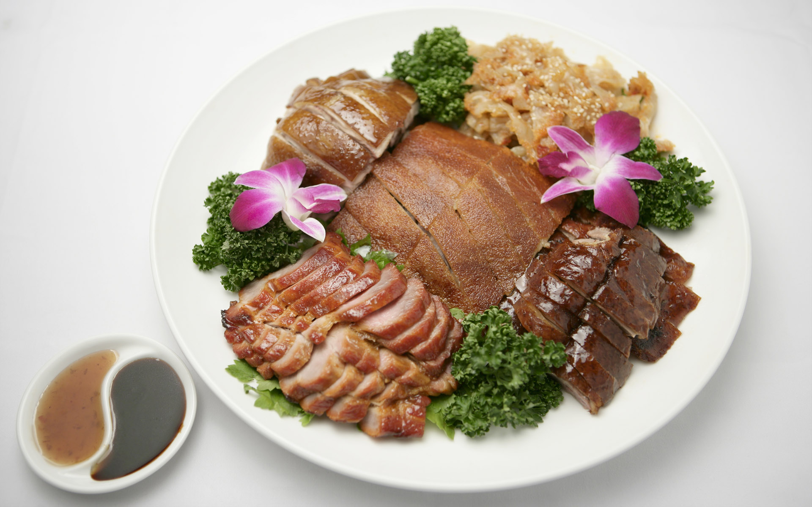
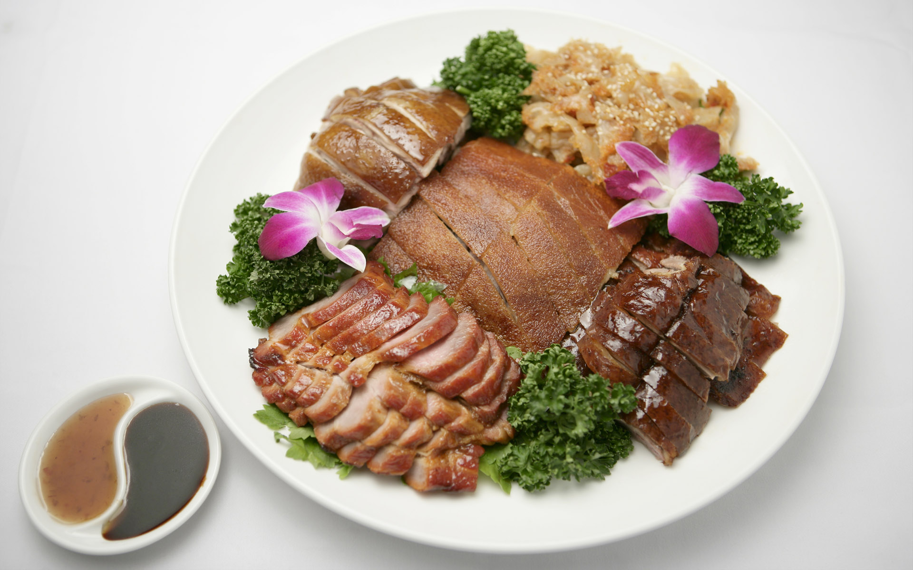

Hello
Hello
Hello
The city was originally three different towns around the place where the Han River merged with the Yangtze River (Changjiang, 长江, “long river”). The Yangtze River flows from the southwest to the northeast in the area of Wuhan and the Han River enters from the west.
The present Yellow Crane Tower is a modern building that was built in the 1980s after the old Yellow Crane Tower was destroyed to make way for the Yangtze River Bridge that was completed in 1957. The original site was on a hill next to the river.
The Forbidden City is the palatial heart of China. Constructed in 1420, during the early Ming Dynasty, it is China's best-preserved imperial palace, and the largest ancient palatial structure in the world.
As one of the five most important palaces in the world, the grand halls and walls proudly display the essence and culmination of traditional Chinese architecture, fitting for the capital city of the world’s largest nation.
Sichuan Province has abundant tourism resources, ranging from adorable pandas to breathtaking natural scenery, from hydraulic engineering systems dating back to ancient times and common residences in old towns to the former dwellings of celebrities, from Daoist to Buddhist temples, from rock carvings and murals to modern art museums, and from prehistoric ruins to modern constructions. This province has everything you can think of to discover.
Cities
 
